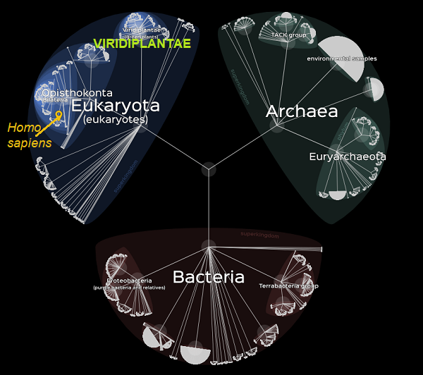
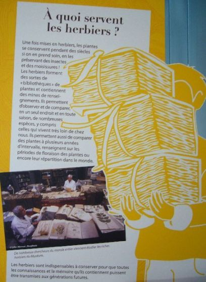

Le saviez-vous ?
Qu'est-ce que la convergence évolutive en Botanique ?
C'est tout simplement quand, sans liens de parenté, des végétaux développent les mêmes adaptations pour survivre dans des environnements similaires bien que très éloignés. Leur ressemblance n'est qu'apparente ! Il ne faut pas oublier la convergence évolutive :
 comme celle des cactus et des euphorbes
comme celle des cactus et des euphorbes
Darwin lui-même, à partir de la cinquième édition de "L'origine des espèces", avait adopté la découverte de Fritz Müller (1821-1897) en entomologie : l'incohérence entre les caractères larvaires et adultes, comme une démonstration que la similitude et la généalogie ne coïncide pas toujours.
Explorer l'arbre de la vie
Cette exploration est désormais devenue presque facile grâce à Lifemap.

© Lifemap
Botanique systématique
Nommer une fleur est une chose. S'initier à la botanique systématique est quelque chose d'autre qui demande la pratique d'un vocabulaire particulier car la systématique inventorie, nomme, classe et reconstruit l'histoire évolutive des végétaux vivants et disparus grâce à la génétique.
Mais sur le terrain cette science génétique n'est pas du domaine d'un botaniste amateur qui, par contre, doit faire preuve d'attention et de beaucoup de prudence surtout en présence des enfants.
Herbiers
Le plus vieil herbier d'Europe conservé
date de 1558.
Il a été réalisé à Lyon par un étudiant nommé Jean Girault.

Pour en savoir plus, écoutez sur France Culture :
L'art de l'Herbier, entre science et esthétique
Botanistes du 21e siècle (texte bilingue anglais/français)
 | |